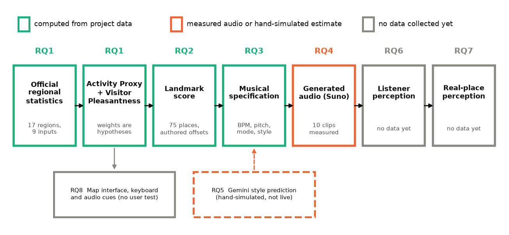
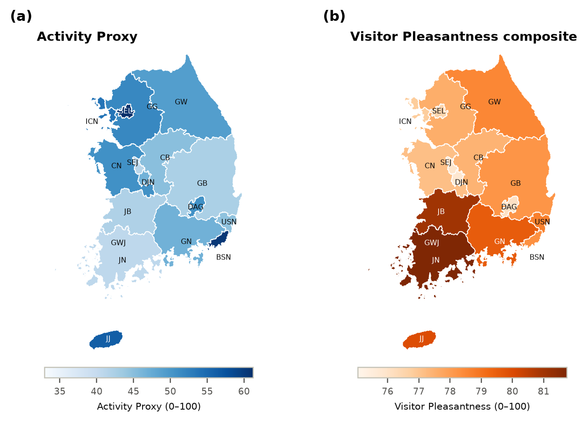
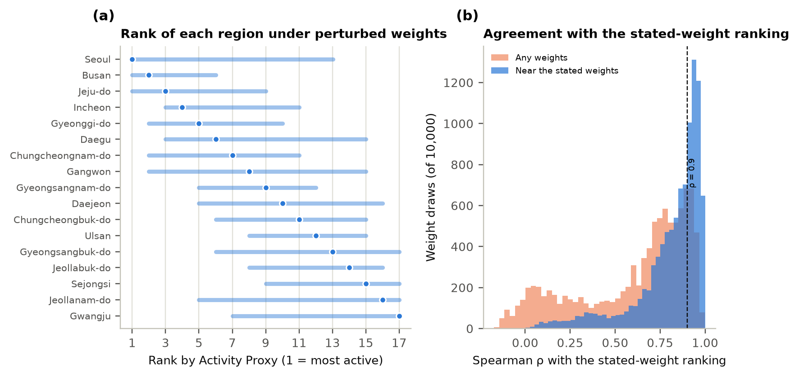
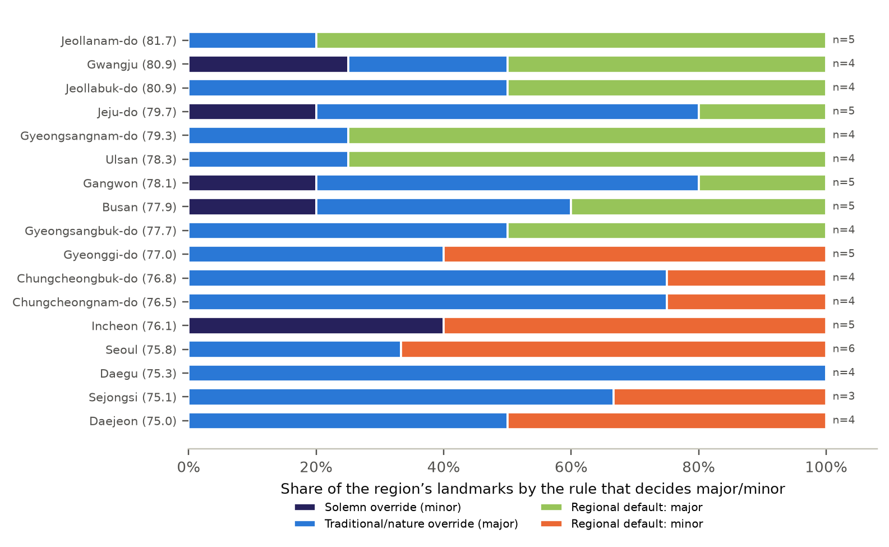
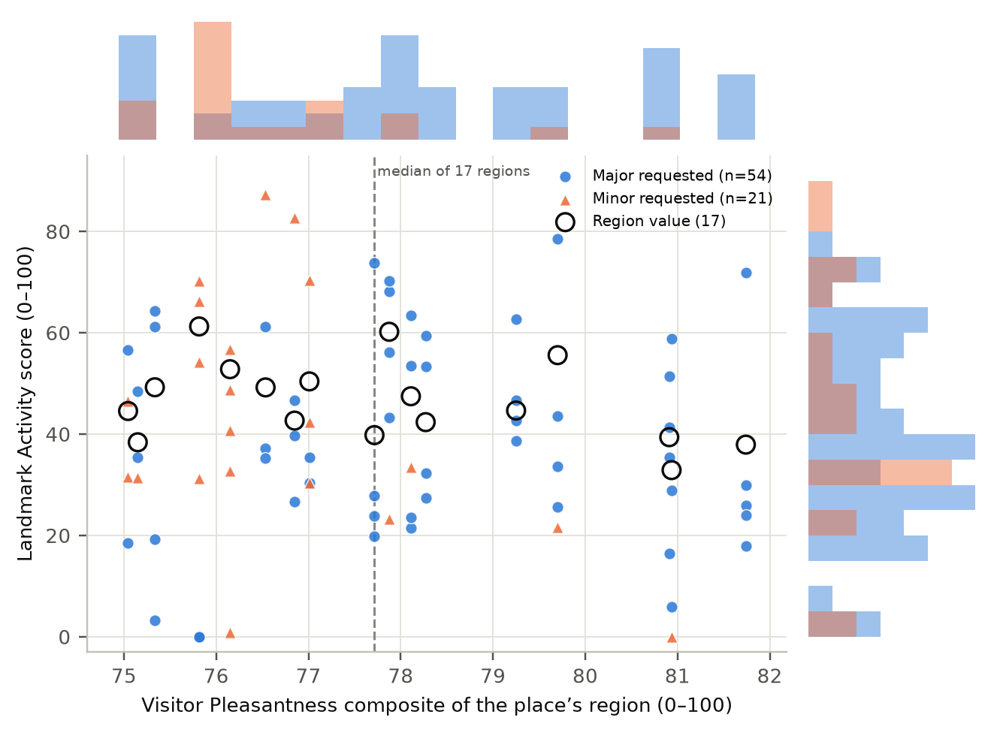
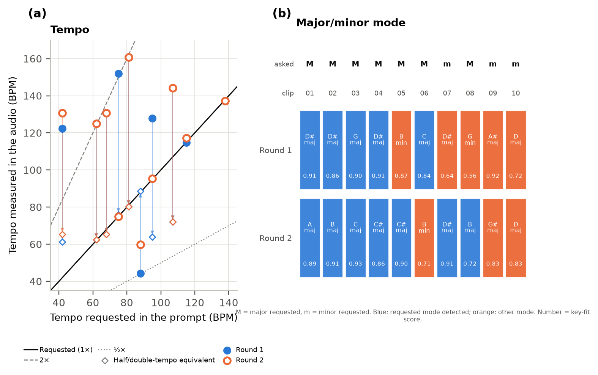
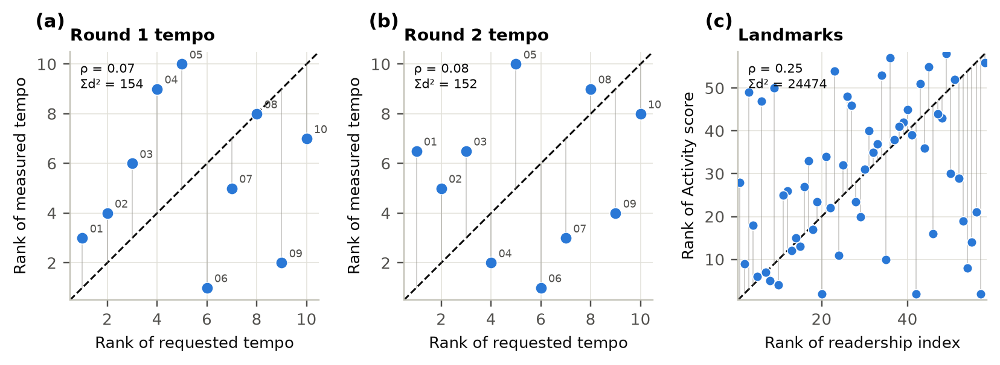
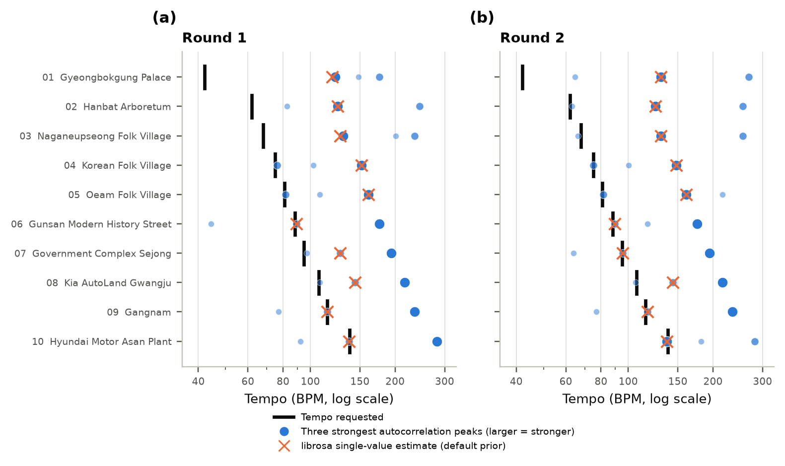
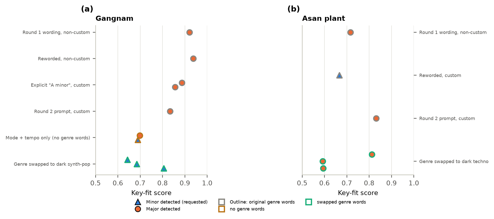
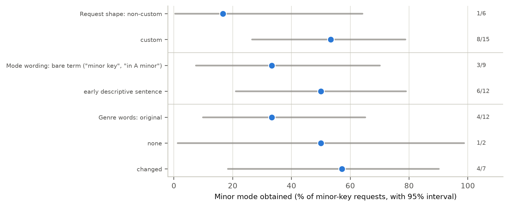

배경. Moodscape는 한국 지역의 공식 통계를 음악으로 바꾸어, 지도를 보지 않고도 장소의 성격을 느끼게 하려는 프로토타입이다. 이 아이디어는 지역 데이터 → 점수 → 음악 사양 → 생성 음원 → 사람이 듣는 것과 실제 장소라는 사슬에 의존하며, 각 연결은 따로 실패할 수 있다. 방법. 연결을 하나씩 “X는 어떻게 Y로 이어지는가?” 형태의 연구 질문으로 검증했다. 17개 지역의 공식 입력 9개, 75개 랜드마크 점수, 템포·조성·스타일의 결정 규칙, 두 차례에 걸쳐 Suno로 생성하고 librosa로 측정한 20개 트랙을 사용했다. 추가로 세종 클립 하나에 비공식 단일 청취자의 블라인드 탭 템포 진단과 결정론적 후처리를 적용했다. Gemini 기반 스타일 예측기는 구현되어 데이터 매핑으로 제약되어 있으나, 키 기반 출력이 기록되지 않아 규칙 경로와의 비교는 수작업 모의다. 정식 청취자 평가와 현장 관찰은 설계만 되어 있고 수집되지 않았다. 결과. 활동 프록시는 서울·부산·제주를 가장 높게 매기지만, 명시된 가중치에 민감하다(소폭 교란 시 ρ 중앙값 0.87, ρ ≥ 0.9 유지 비율 41.8%). 지역은 랜드마크 점수 분산의 12.2%만 설명하므로, 장소 수준의 소리는 대부분 사람이 정한 오프셋을 반영한다. 조성은 10개 중 5개(1차), 10개 중 7개(2차)가 일치했고, 두 차례의 단조 요청 5건은 모두 단조가 나오지 않았다(후속 생성에서는 일부 나왔다). 요청 템포는 가장 강한 리듬 피크 3개 안에 7/10, 9/10개 클립에서 나타났다(우연 기대 약 1.5개). 그러나 세종의 95 BPM 요청은 자동 추정 95.3 BPM과 달리 사람에게 48 BPM으로 들렸다. 프롬프트 강화와 95 BPM 펄스 중첩도 48·47 BPM으로 실패했고, 전체 음원을 47→95 BPM으로 피치 보존 리타이밍한 뒤 충돌하는 하이햇을 교체하자 블라인드 탭이 96 BPM(오차 1.1%)이 되었다. 장르어 교체는 한 클립을 0/5에서 3/3 단조로 바꿨지만 두 번째 클립에는 전이되지 않았다. 결론. 앞의 네 연결은 구현·측정이 가능하며, 둘은 인터페이스가 암시하는 것보다 약하다. 세종 사례는 자동 BPM 일치가 지각된 주박 일치를 보장하지 않으며, 정확한 지각 템포에는 생성 프롬프트보다 결정론적 후처리가 필요할 수 있음을 보인다. 정식 청취자 연구와 접근성 효과는 아직 검증되지 않았다.
키워드: 음향 경관 · 소리화(sonification) · ISO 12913 · 생성형 음악 · 대한민국 · 접근성 · 타당성 검증
지도는 색과 라벨로 장소 간 차이를 전달한다. 소리는 같은 정보의 일부를 전달할 수 있고, 시각 채널을 쓰기 어려운 사람에게도 가능하다. Moodscape는 이를 한국에 대해 구체화한 프로토타입이다. 모든 지역과 랜드마크는 계산된 “무드”를 갖고, 무드가 음악 사양을 정하며, 생성형 음악 서비스가 이를 음원으로 만들고, 인터페이스는 같은 매개변수를 텍스트와 키보드 조작으로도 보여 준다.
이런 프로토타입은 하나의 사슬이며 가장 약한 고리만큼만 의미가 있다. 느리고 단조인 곡을 들은 청취자는 (i) 통계가 정말 그 장소를 차분하게 만드는지, (ii) 사양이 정말 느림과 단조를 요청하는지, (iii) 음원이 정말 느리고 단조인지, (iv) 청취자가 정말 차분함을 듣는지, (v) 실제 장소가 정말 차분한지 물을 수 있다. 실제로는 이들이 하나의 주장으로 뭉뚱그려지기 쉽다. 여기서는 각각 별도의 질문·방법·증거 등급을 부여한다.
음향 경관(soundscape)은 사람이 맥락 속에서 지각한 음향 환경으로 정의되며 [2], 설문과 음향 측정으로 평가하고 보통 쾌적성(Pleasantness)과 사건성(Eventfulness)이라는 두 축의 원형(circumplex) 위에 놓는다 [3,4,5]. Oberman 등 [1]은 이 틀을 보호 자연지역에 적용해 28개 평가 지점에서 설문 443건을 수집했고, 지각된 음원 우세와 심리음향 지표가 음압 수준만보다 쾌적성·사건성을 더 잘 예측함을 보였다. 이 프로젝트에 주는 시사점은 두 가지다. 첫째, 하나의 데시벨형 또는 “활동” 수치는 장소가 어떻게 들리는지를 약하게만 설명한다. 둘째, “이 지표가 지각된 사건성에 대응한다”는 주장은 가정이 아니라 현장 지각으로 검증해야 한다. Moodscape의 활동 프록시는 ISO 좌표가 아니라 공식 통계 합성치이며, 방법 절의 현장 프로토콜이 이를 검증하도록 설계되었다.
이 보고서는 [1]의 구조를 따른다. 연구 질문을 먼저 제시하고, 결과를 질문별로 정리하며, 방법은 논의 뒤에 두고, 자료에 맞는 곳에 기술 통계표·원형 산점도·누적 막대를 쓴다.
지리 데이터의 소리화(sonification)는 지도 인터페이스에서 음성과 비음성 오디오를 조율한 선행 연구가 있다 [6]. 이 프로젝트의 설계는 두 원칙을 따른다. 오디오는 장식이 아니라 데이터를 실어야 하고, 인터페이스는 사용자 자신의 스크린 리더와 협력해야 한다(초기 버전이 스크린 리더와 충돌한 뒤의 수정). 시각장애·저시력 사용자에게 효과가 있는지는 검증되지 않았다(RQ8).
각 질문은 그림 1의 사슬에서 한 연결을 따르며 시나리오로 서술된다.

이 보고서에서 쓰는 용어
결과는 사슬 순서로 연구 질문별로 보고한다. 증거 등급: 계산(프로젝트 데이터·코드), 측정(생성 음원), 수작업 모의(연구자가 함수의 지시를 손으로 따라 한 것이며 실제 모델 출력이 아님), 대기(데이터 없음). 별도 언급이 없으면 구간은 95%, 검정은 양측, 순열 검정은 20,000회(시드 20260920)이다.
시나리오. 방문객이 지도를 연다. 17개 지역마다 색과 음이 있다. 그 값은 어디서 왔으며, 합리적인 가정이 달라져도 같은 그림이 나올까?
입력과 출력. 활동 프록시는 32.9에서 61.3까지였다(평균 46.4, SD 8.0; 표 1, 그림 2a). 서울, 부산, 제주이(가) 가장 높았고 광주이(가) 가장 낮았다. 방문객 쾌적성 합성치는 훨씬 좁은 75.0–81.7(SD 2.1)에 분포했으며 전남·광주가 높고 대전·세종이 낮았다(그림 2b).
표 1. 17개 지역 입력과 두 합성치의 기술 통계. 값은 9개 입력으로 계산했다. 모델은 방법 절에 있다.
| 항목 | 최소 | 최대 | 평균 | 중앙값 | SD |
|---|---|---|---|---|---|
| 인구 밀도(km²당) | 90 | 15432 | 2101 | 855 | 3671 |
| 주민 1인당 국내 관광 여행 수 | 0.94 | 20.48 | 6.90 | 3.85 | 5.72 |
| 10만 명당 소음·진동 민원 | 77 | 679 | 242 | 212 | 148 |
| 10만 명당 소음배출 규제 시설 | 3 | 214 | 72 | 38 | 70 |
| 혼잡 압력(100 − 혼잡 만족도) | 17.90 | 29.30 | 22.88 | 23.00 | 3.01 |
| 전반적 만족도(0–100) | 77.80 | 83.30 | 80.33 | 80.00 | 1.90 |
| 추천 의향(0–100) | 71.00 | 79.30 | 74.86 | 74.80 | 2.27 |
| 재방문 의향(0–100) | 72.60 | 81.60 | 76.86 | 76.90 | 2.39 |
| 혼잡 만족도(0–100) | 70.70 | 82.10 | 77.12 | 77.00 | 3.01 |
| 활동 프록시(0–100) | 32.91 | 61.27 | 46.42 | 44.67 | 7.98 |
| 방문객 쾌적성 합성치(0–100) | 75.05 | 81.74 | 77.79 | 77.72 | 2.11 |

실효 영향력은 명시 가중치와 다르다. 가중치(0.35, 0.30, 0.15, 0.10, 0.10)는 설계 가설이다. 구성요소와 최종 점수의 순위 상관은 이를 따르지 않았다(표 2). 민원(ρ = 0.68)과 혼잡 압력(0.65)은 점수와 가깝게 움직였지만, 가중치 0.30의 관광 강도는 그렇지 않았다(-0.07). 가장 무거운 밀도를 빼면 전체 순서와의 일치가 ρ = 0.23로 떨어졌고, 다른 단일 구성요소를 빼면 ρ ≥ 0.60였다. 동일 가중치는 ρ = 0.94로 순서를 재현했다.
표 2. 각 구성요소와 활동 프록시의 관계. ρ(구성요소)는 17개 지역에서 스케일된 구성요소와 최종 점수의 스피어먼 상관. ρ(제거)는 해당 구성요소를 빼고 나머지 가중치를 재정규화한 순위의 일치도.
| 구성요소 | 변환 | 가중치 | ρ(구성요소) | ρ(제거) |
|---|---|---|---|---|
| 인구 밀도 | log1p, min–max | 0.35 | 0.45 | 0.23 |
| 1인당 관광 여행 수 | log1p, min–max | 0.30 | -0.07 | 0.60 |
| 10만 명당 소음 민원 | log1p, min–max | 0.15 | 0.68 | 0.85 |
| 10만 명당 소음 시설 | log1p, min–max | 0.10 | -0.20 | 0.91 |
| 혼잡 압력 | log1p, min–max | 0.10 | 0.65 | 0.94 |
가중치에 대한 강건성. 명시 가중치 중심의 디리클레 분포(농도 20; 가중치 SD 0.07–0.10)에서 가중치 10,000개를, 극단 사례로 균등 디리클레에서 10,000개를 뽑았다. 소폭 교란에서 명시 순서와의 일치는 중앙값 ρ = 0.87였지만 5번째 백분위수는 0.34, 최솟값은 0.00였고, ρ ≥ 0.9를 유지한 추출은 41.8%뿐이었다(균등: 중앙값 0.72, 14.5%; 그림 3b). 지역 순위의 95% 구간 중앙 폭은 17개 순위 중 9였다(그림 3a). 추출의 절반 넘게 상위 3위를 유지한 지역은 서울(74%), 부산(90%), 제주(56%)뿐이다.

유일한 외부 기준. 두 지역은 직접 발표된 음향 경관 연구가 있다. 모델은 서울을 1위(점수 61.3), 대전을 10위(44.6)로 매겨 발표된 사건성 값(78, 45)과 같은 순서다. 두 점은 모순을 드러낼 수는 있어도 모델을 검증할 수는 없으며, 이는 상식 점검일 뿐이다.
시나리오. 방문객이 서울의 홍대와 경복궁을 연다. 둘의 소리가 다른 것은 데이터가 그렇게 말해서인가, 누군가 그렇게 정해서인가?
지역은 랜드마크 점수를 거의 설명하지 못한다. 75개 랜드마크의 점수는 지역 활동 프록시에 사람이 정한 오프셋을 더하고 [0, 1]로 자른 값이다. 오프셋의 SD는 0.21, 범위는 -0.67에서 +0.40(점수 단위 0–1)로, 지역 SD 0.08보다 크다. 지역별 일원 분석(지역당 3–6개)에서 지역은 분산의 12.2%를 설명했다(η² = 0.122; ICC(1) = -0.128, 0과 구분되지 않음). 3개 랜드마크는 하한 0에서 잘려 사람이 정한 차분함이 일부 가려진다. 즉 장소 수준의 점수와 소리는 공식 통계보다 사람이 정한 오프셋을 훨씬 더 반영한다. 인터페이스는 이 점수를 예시적(illustrative)이라 표시하며 어떤 랜드마크도 측정된 것으로 표시되지 않는다.
온라인 관심도. 공통 12개월(2025.9.1–2026.8.31)의 영어 위키백과 월간 조회수를 로그 스케일한 지수를 75개 중 58개 랜드마크에서 얻을 수 있었다(16개는 사용할 문서가 없고 1개는 불완전). 랜드마크 점수와는 약한 양의 연관(스피어먼 ρ = 0.25, 순열 p = 0.062, n = 58; 순위 그림 7c)을 보였으며 5% 수준에서 0과 구분되지 않는다. 조회수는 문서에 대한 온라인 관심이며 때로 랜드마크보다 넓은 대상을 가리키고, 방문자 수·소음·지각된 사건성이 아니다. 이 지수는 음악을 바꾸지 않는다.
시나리오. 한 장소의 점수가 정해졌다. 음악에는 정확히 무엇이 요청되며, 각 요청은 어떤 규칙이 정하는가?
템포와 음높이. 템포는 round(42 + 110 × 점수) BPM이며 75개 랜드마크에서 42–138 BPM이다(공식은 42–152 BPM을 허용하나 랜드마크는 42–138에 이른다). 음높이는 A4 위로 round(12 × 점수) 반음(440–880 Hz)이다. 음악 사양 패널이 이를 표시하고, 탐색 음은 관측 점수 범위로 늘린 관련 5음 음계 매핑을 쓰며, 음이름은 생성기에 약한 근음 힌트(“around F”)로 전달된다.
조성은 세 규칙이 정하며, 방문객 쾌적성에 연결된 규칙은 절반도 결정하지 못한다. 75개 중 40개(53.3%)는 범주 규칙으로 조성이 정해진다(엄숙 장소 단조 6개, 전통·자연·행정 장소 장조 34개). 나머지 35개(46.7%)는 쾌적성 기본값을 따른다. 지역 합성치가 17개 지역 중앙값(77.72) 이상이면 장조, 아니면 단조다(표 3, 그림 4). 전체적으로 21개(28.0%)가 단조를 요청한다.
표 3. 요청 조성을 결정하는 규칙(현재 코드, 랜드마크 75개). 나열 순서대로 적용하므로 앞 규칙에 해당하는 장소는 뒤 규칙에서 세지 않는다.
| 결정 규칙 | 장조 | 단조 | 장소 수 |
|---|---|---|---|
| 엄숙 규칙(추모·묘지·천문대·동굴 등) | 0 | 6 | 6 |
| 전통·자연 규칙(한옥·사찰·궁·공원·해변·정부청사 등) | 34 | 0 | 34 |
| 지역 방문객 쾌적성 기본값(17개 지역 중앙값 대비) | 20 | 15 | 35 |
| 합계 | 54 | 21 | 75 |
이전 내부 집계(35/34)와 한 곳 차이가 난다. 그 집계는 범주 목록 수정 이전에 작성되었으며, 이 표는 2026년 10월 11일에 추출한 모델을 쓴다.

쾌적성 기준선은 잡음 범위 안에 있다. 17개 합성치는 75.0–81.7, 즉 6.7점 폭에 있다. 기준이 표본 중앙값이므로 모든 지역이 절대적으로 얼마나 쾌적하든 구조상 약 절반의 지역(8/17: Seoul, Daegu, Incheon, Daejeon, Sejongsi, Gyeonggi-do, Chungcheongbuk-do, Chungcheongnam-do)이 기본값 장소에서 단조를 받는다. 6개 지역은 중앙값에서 1점 이내이며 경북은 정확히 중앙값에 놓여 비교가 ≥이기 때문에만 장조로 분류된다. 값이 지역 단위이므로 한 지역의 기본값 장소는 모두 같은 결정을 공유한다. 홍대·강남·N서울타워·동대문디자인플라자는 같은 이유로 모두 단조다. 쾌적성 결정은 75개가 아니라 17개다(그림 5).

스타일 단어와 조성. 장르·분위기 단어는 장소 범주와 점수대로 정해지며 조성과 독립적이다. 조성은 앞쪽의 한 문장으로 서술된다. 단조는 사실상 “in a minor key (around 근음) — melancholic, somber, shadowed tonality, no major-key brightness”, 장조는 “in a major key (around 근음) — bright, open, uplifted tonality”로 쓴다. 이전 버전은 “warm”, “mellow” 같은 긍정 정서 단어가 단조 요청과 함께 가도록 두었고, 현재 규칙은 단조일 때 그런 단어의 고정 목록을 제거한다. 단조 스타일 21개 중 12개에는 여전히 “relaxing”, “peaceful”, “serene” 중 하나 이상이 들어 있다(탐색적 키워드 집계). 조성이 방문객 만족을 나르는 적절한 수단인지는 검증되지 않았으며, 단조가 낮은 정서가와 연관된다는 통념에서 빌린 설계 가정이다.
시나리오. 프롬프트는 “minor key, around 115 BPM”이라고 말한다. 생성 모델이 곡을 돌려준다. 단조인가, 115 BPM 근처인가, 무엇이 이를 바꾸는가?
1차(원래 프롬프트, 비커스텀 요청). 관측 점수 범위(0–87)를 아우르는 랜드마크 10개를 한 번씩 생성했다. 요청 조성은 10개 중 5개에서 탐지되었다(95% 클로퍼–피어슨 구간 19–81%): 장조 요청 5/7, 단조 요청 0/3(그림 6b, 표 4). 평균 조성 적합도 점수는 일치 0.89, 불일치 0.74였으며, 강남의 실패(A♯ 장조)는 조성 적합도 점수 0.92로 탐지되어 탐지기가 망설인 것이 아니다. 템포는 ±10% 이내가 2/10이었고, 요청과 측정 템포의 순위 상관은 ρ = 0.07(p = 0.864)였다. 요청이 42–138 BPM이었는데 측정 템포 10개 중 9개가 114–161 BPM에 몰렸다.
2차(수정 프롬프트, 커스텀 요청). 프롬프트 빌더를 바꾼 뒤(조성을 근음과 함께 앞 문장으로, 단조 스타일에서 긍정 정서 단어 제거, 행정 건물 범주 추가, 요청을 서비스의 커스텀 모드로 전환) 같은 10개를 서비스에 새로 요청해(새 음원) 다시 생성했다. 요청 조성은 7/10에서 탐지되었다(구간 35–93%): 장조 7/8, 단조 0/2. 템포는 ±10% 이내가 4/10(ρ = 0.08, p = 0.829)이었다. 1차의 단조 요청 3건 중 하나(세종)는 사실 정정 후 2차에서 장조 요청이 되었으므로 두 차수는 같은 요청을 검증하지 않으며, 5/10에서 7/10로의 개선은 부분적으로 그 변경의 산물이고 구간이 1차와 겹친다.
표 4. 두 차수의 랜드마크 10개에 대한 요청·측정 템포와 조성. 측정 템포는 박 추적 추정값(방법 참조), 비 = 측정/요청. ✓ = 요청 조성 탐지, ✗ = 다른 조성. 2차에서 세종(클립 07)은 장조를 요청했고 1차는 단조였다.
| 클립 | 랜드마크 | 점수 | 요청 BPM | 1차 BPM | 2차 BPM | 요청 조성 | 1차 키 | 2차 키 |
|---|---|---|---|---|---|---|---|---|
| 01 | Gyeongbokgung Palace | 0 | 42 | 122 (2.91×) | 131 (3.11×) | 장조 | D# major ✓ | A major ✓ |
| 02 | Hanbat Arboretum | 19 | 62 | 125 (2.02×) | 125 (2.02×) | 장조 | D# major ✓ | B major ✓ |
| 03 | Naganeupseong Folk Village | 24 | 68 | 131 (1.92×) | 131 (1.92×) | 장조 | G major ✓ | C major ✓ |
| 04 | Korean Folk Village | 30 | 75 | 152 (2.03×) | 75 (1.00×) | 장조 | D# major ✓ | C# major ✓ |
| 05 | Oeam Folk Village | 35 | 81 | 161 (1.98×) | 161 (1.98×) | 장조 | B minor ✗ | C# major ✓ |
| 06 | Gunsan Modern History Street | 41 | 88 | 44 (0.50×) | 60 (0.68×) | 장조 | C major ✓ | B minor ✗ |
| 07 | Government Complex Sejong | 48 | 95 | 128 (1.35×) | 95 (1.00×) | 단조 | D# major ✗ | D# major ✓ |
| 08 | Kia AutoLand Gwangju | 59 | 107 | 144 (1.35×) | 144 (1.35×) | 장조 | G minor ✗ | B major ✓ |
| 09 | Gangnam | 66 | 115 | 115 (1.00×) | 117 (1.02×) | 단조 | A# major ✗ | G# major ✗ |
| 10 | Hyundai Motor Asan Plant | 87 | 138 | 137 (0.99×) | 137 (0.99×) | 단조 | D major ✗ | D major ✗ |


템포가 틀린 것인가, 잘못 측정된 것인가? 요청과 측정 템포의 순위 일치는 그림 7a,b에 있다. 단일 템포 추정은 청취자가 두드릴 박 단위와 다른 단위를 고를 수 있다. 같은 오디오를 사전 분포 없이 본 관점, 즉 각 클립 템포그램의 가장 강한 피크 3개로 검증했다. 요청 템포(±5%)는 1차 7/10, 2차 9/10 클립에서 이 피크 안에 있었으며, 요청을 클립 간에 무작위로 섞었을 때의 기대값은 각각 1.5, 1.6이다(95번째 백분위수 3, 4; 둘 다 p < 0.0001; 표 5, 그림 8). 반면 단일 최선 추정은 ±5% 이내가 3, 4개뿐이었다. librosa의 기본 템포 사전분포(중심 120 BPM)를 없애도 추정은 나아지지 않았다(1차 ρ: 기본 0.09, 균등 0.22). 1차에서 가장 느린 세 요청(42, 62, 68 BPM)은 상위 피크에 한 번도 나타나지 않았고(0/3), 75 BPM 이상 요청은 모두 나타났다(7/7). 2차에서는 느린 세 요청 중 둘이 나타났고(2/3) 42 BPM 요청만 나타나지 않았다. 따라서 템포는 대체로 존재하나 대개 가장 강한 리듬 단위는 아니며, 가장 느린 요청이 가장 덜 지켜진다. 이 분석은 존재 판정에 요청값을 쓰므로 요청된 박이 탐지 가능함을 보일 뿐 청취자가 주박으로 지각함을 보이지 않는다. 단일 추정 5/10개는 두 독립 차수에서 수치가 동일했으며(예: 125.0, 130.8, 137.2, 144.2 BPM), 이는 추정기의 이산 템포 격자와 일치한다.
표 5. 템포 진단. “단일 추정”은 기본 사전분포(로그정규, 120 BPM 중심)의 전역 템포 추정값, “상위 3 피크”는 가장 강한 자기상관 피크 3개 안에 요청 템포(±5%)가 있는 클립 수. 기대값(95번째 백분위수)은 요청을 클립 간에 20,000번 섞어 얻었다.
| 차수 | 단일 추정 ±5% 이내 | 상위 3 피크에 요청 포함 | 우연 기대값(95번째) | 순열 p | 요청 ≤ 68 BPM | 요청 ≥ 75 BPM |
|---|---|---|---|---|---|---|
| 1차 | 3/10 | 7/10 | 1.5 (3) | p < 0.0001 | 0/3 | 7/7 |
| 2차 | 4/10 | 9/10 | 1.6 (4) | p < 0.0001 | 2/3 | 7/7 |

사람이 들은 주박: 세종 95 BPM 사례. 2026년 10월 25일 비공식 단일 청취자가 이름과 목표값을 보지 않고 세종 클립 07의 탭 템포를 기록했다(표 6). 2차 원음은 95 BPM을 요청했고 기본 자동 추정도 95.3 BPM이었지만, 청취자는 48 BPM을 주박으로 들었다. “95 BPM 쿼터노트 펄스, 하프타임 금지”를 명시한 재생성도 48 BPM이었다. 원음에 정확히 95 BPM의 킥·림 펄스를 중첩해도 47 BPM으로 들려, 추가 펄스가 기존 느린 박의 세분으로 편입되었다. 마지막으로 원음을 사람 측정 47 BPM에서 목표 95 BPM으로 2.021배 피치 보존 리타이밍해 길이를 164.413초에서 81.341초로 줄이고, 5.2 kHz 위 기존 하이햇 성분을 12%만 남긴 뒤 0.6316초마다 새 닫힌 하이햇과 킥·림을 배치했다. 새 25초 블라인드 클립의 탭은 96 BPM으로 목표와 1 BPM(1.1%) 차이였고, 작업 전에 사용한 ±5% 기준을 통과했다.
표 6. 세종 클립 07의 지각 템포 진단과 수정 단계. 자동값은 librosa 기본 템포 추정이며, 사람값은 같은 한 명의 비공식 블라인드 탭이다. 마지막 행은 생성 원음이 아니라 후처리 음원이다.
| 단계 | 목표 BPM | 자동 BPM | 사람 탭 BPM | 판정 |
|---|---|---|---|---|
| 2차 Suno 원음 | 95 | 95.3 | 48 | 실패 |
| 95 BPM 강화 프롬프트 재생성 | 95 | 95.3 | 48 | 실패 |
| 원음 + 결정론적 95 BPM 펄스 | 95 | 95.3 (균등 사전 47.7) | 47 | 실패 |
| 47→95 피치 보존 리타이밍 + 하이햇 교체 | 95 | 95.3 | 96 | 통과(오차 1.1%) |
n = 1 청취자·1 장소인 순차적 공학 진단이다. 효과 크기나 일반화 가능한 성공률이 아니며 RQ6 청취 실험에 포함하지 않는다.
이 사례는 자동 분석이 틀렸다는 단순한 결론보다 더 제한적인 것을 보인다. 같은 오디오에는 95와 약 48 BPM의 계층적 박이 함께 존재할 수 있고, 기본 사전분포를 쓰는 알고리즘은 95를 고르지만 청취자는 48을 주박으로 고를 수 있다. 따라서 요청 템포가 탐지되거나 자동값이 요청과 일치해도 지각된 템포 충실도는 별도로 확인해야 한다. 마지막 수정의 96 BPM 결과는 한 클립에서 결정론적 리타이밍과 리듬 교체가 가능함을 보일 뿐, Suno 프롬프트의 템포 충실도가 개선되었다는 증거는 아니다.
무엇이 조성을 바꾸는가? 한 곳에서는 장르어였다. 반복해서 단조가 나오지 않은 두 클립, 강남과 아산 공장은 추가 생성으로 검토했다(표 7, 그림 9). 강남은 10개 생성 중 기존 장르어(“lo-fi hip-hop, city-pop”)를 유지한 5개는 문구 수정·요청 형태·근음 명시와 무관하게 하나도 단조가 아니었고, 장르어를 주지 않았을 때는 2개 중 1개, 장르를 “dark synth-pop, moody downtempo”로 바꿨을 때는 3개 중 3개가 단조였다. 같은 교체는 전이되지 않았다. 아산 공장은 교체 장르 3개 중 0개, 기존 문구 3개 중 1개가 단조였다(유일한 성공과 이후 실패는 같은 문구였다). 근음은 성공한 강남 단조 트랙 세 개 중 하나에서만 일치했다(탐지 F, G, D#, 요청 F). 세종은 다른 원인이었다. 키워드 충돌로 정부청사가 반도체 공장 스타일을 받았고, 사실 정정(젊은 가족이 많은 계획도시)으로 요청 조성이 바뀌었다. 둘 다 프로젝트 자체의 코드·데이터 결함이었고 수정되었으며 후속 생성 음원이 정정된 요청과 일치했다(단조 요청 시 D♯ 단조 적합도 점수 0.83, 장조 요청 시 D♯ 장조 적합도 점수 0.94).
표 7. 반복 실패한 두 클립의 모든 생성을 프롬프트의 장르 표현별로 묶음. 탐지 키(적합도 점수). “단조”는 요청 조성을 얻은 수. 같은 API 호출의 트랙은 함께 나열되며 독립이 아니다.
| 프롬프트/요청 | 장르어 | 탐지 키(적합도 점수) | 단조 / n |
|---|---|---|---|
| 강남 | |||
| 1차 원문, 비커스텀 | 기존 장르어 | A# major (0.92) | 0/1 |
| 문구 수정, 비커스텀 | 기존 장르어 | D# major (0.94) | 0/1 |
| "A minor" 명시, 커스텀 | 기존 장르어 | C major (0.89), C major (0.86) | 0/2 |
| 2차 프롬프트, 커스텀 | 기존 장르어 | G# major (0.83) | 0/1 |
| 조성+템포만(장르어 없음) | 장르어 없음 | D major (0.70), E minor (0.69) | 1/2 |
| 장르를 어두운 신스팝으로 교체 | 장르어 교체 | F minor (0.64), G minor (0.68), D# minor (0.81) | 3/3 |
| 아산 공장 | |||
| 1차 원문, 비커스텀 | 기존 장르어 | D major (0.72) | 0/1 |
| 문구 수정, 커스텀 | 기존 장르어 | G minor (0.67) | 1/1 |
| 2차 프롬프트, 커스텀 | 기존 장르어 | D major (0.83) | 0/1 |
| 장르를 어두운 테크노로 교체 | 장르어 교체 | D major (0.81), D major (0.59), G major (0.59) | 0/3 |

이 후속 실험은 소규모이고 사후적이며 일부는 수작업이어서 추정치가 아닌 가설을 만든다. Suno의 출력은 확률적이어서 같은 아산 문구가 한 번은 단조, 한 번은 장조를 냈다.
프롬프트를 이렇게 만드는 이유와 성공률을 높이는 방법. 생성 요청은 네 가지 일을 하는 짧은 텍스트다. 음악을 데이터 안에 놓고(템포, 조성, 근음), 어떤 느낌이어야 하는지(장면 문장, 장르·분위기 단어), 어떤 소리여야 하는지(악기 구성), 무엇을 뺄지(보컬)를 말한다. 서비스는 텍스트를 약한 지시로 다루고 출력은 확률적이므로, 유용한 질문은 텍스트의 어느 부분이 요청한 매개변수가 나올 확률을 높이느냐이다. 표 8은 각 부분의 근거와 우리가 가진 증거를, 그림 10은 음원이 있는 모든 단조 요청을 합쳐 보여 준다.
표 8. 생성 요청의 해부: 각 부분이 왜 있는지와 데이터가 말하는 것. “시사적”은 기대한 방향의 차이이지만 이 표본 크기에서는 우연과 구분되지 않는다는 뜻이다.
| 요청의 부분 | 근거: 왜 도움이 되어야 하는가 | 이 연구의 증거 | 지위 |
|---|---|---|---|
| 스타일·제목 필드 분리(서비스의 커스텀 모드) | 서비스가 스타일 필드를 명시적 제어로 문서화하므로, 텍스트를 장면 재해석이 아니라 음악 설정으로 읽는다. | 단조 획득 커스텀 8/15 대 비커스텀 1/6 (p = 0.178). | 시사적 |
| 앞쪽에 정서 단어와 근음 힌트로 서술한 조성 | 앞 위치는 조성에 우선권을 주고, 정서 단어(“melancholic, somber”)는 모델이 따를 가능성이 높은 어휘로 신호를 반복한다. 이론 용어만으로는 그렇지 않다. | 서술 문장 6/12 대 용어만 3/9 (p = 0.660). | 시사적 |
| 단조일 때 긍정 정서 단어 제거 | “warm”, “mellow” 같은 단어는 장조 연상을 지녀 조성 요청과 경쟁한다. | 2차에서 적용했으나 강남은 장르 명사가 남아 여전히 실패했다. 제거만으로는 충분하지 않다. | 필요하나 불충분 |
| 장르·스타일 명사 | 장르 이름은 학습 데이터의 강한 사전지식을 지녀(예: lo-fi, city-pop은 장조처럼 들림) 하나의 조성 문구를 이길 수 있다. | 강남 장르어 교체 3/3 대 나머지 1/7 (p = 0.033, 보정 없음); 아산 0/3. | 가설, 일반화 안 됨 |
| “around T BPM”로 쓴 템포 | 숫자는 구체적이고 서비스가 대략 따를 수 있다. “around”는 정밀도를 약속하지 않는다. | 요청 템포가 가장 강한 리듬 피크 3개 안에 7/10, 9/10 클립(우연 기대 약 1.5); 가장 느린 요청에서 가장 약함. | 지지됨, 불완전 |
| 약한 힌트로서의 근음 | 구체적 닻이 조성 중심을 살짝 이끌 수 있다. 정확한 제어를 기대하지 않아 “around”로 쓴다. | 성공한 강남 단조 트랙 3개 중 1개에서 일치. | 신뢰할 수 없음 |
| AI 보조 프롬프트의 고정 매개변수 | 데이터 매핑이 템포·조성·근음을 고정하고 언어 모델은 장르·악기·분위기·편곡만 제공하므로 매핑과 모순되거나 요청하지 않은 템포를 추가할 수 없다. | 설계 속성, 기록된 실제 출력 없음. | 구조상 보장 |
| 범주 규칙과 현실 사실 | 어떤 문구도 의미를 가지려면 먼저 스타일과 조성이 장소를 올바르게 묘사해야 한다. | 키워드 충돌과 빠진 사실 하나를 고치자 세종의 결과가 깔끔하게 바뀌었다. | 지지됨 |
합친 증거. 음원이 있는 단조 요청 21건 중 9건(42.9%)이 단조를 냈다. 프롬프트의 내용별로 나눠 봐도(그림 10) 이 표본 크기에서 어떤 단일 특성도 성공과 실패를 가르지 못했고, 특성들은 교락되어 있다. 모든 장르 교체가 커스텀 형태와 서술 문구를 썼다. 눈에 띄는 대비는 강남 하나이며 탐색적이다(여러 비교 중 하나, 보정 없음). 단순한 설명이 패턴에 맞는다. 조성 단어와 장르 단어는 경쟁하는 신호이고, 장르 신호가 강한 사전지식을 지니면 이긴다. 이 설명은 강남은 예측하지만 아산은 예측하지 못하므로, 더 많은 랜드마크로 시험할 가설이다.

성공률을 높이는 방법. 추론과 데이터에서 세 가지 수단이 나온다. 첫째, 요청과 모순되는 신호를 없앤다. 이는 프로젝트 자체의 범주 로직과 데이터를 고치는 일이고 생성 크레딧이 들지 않아 가장 분명한 이득이었다. 둘째, 서비스가 문서화한 방식대로 요청을 쓴다. 스타일 필드를 분리하고, 조성은 앞에서 정서 단어로 말하며, 템포와 근음은 약한 힌트로 두고, 장르 단어는 전이된다고 가정하지 않고 랜드마크별로 시험한다. 셋째, 생성하고 확인한다. 출력이 확률적이므로 조성을 자동 탐지해 틀리면 다시 생성하면 트랙당 성공률 p가 m개 트랙에서의 성공 확률 1 − (1 − p)m로 바뀐다. p = 0.33(기존 장르어에서의 비율)일 때 트랙 둘을 반환하는 한 번의 호출은 트랙이 독립이라면 최대 0.56의 확률로 성공하고, 90%에는 약 6개 트랙(세 번 호출, 여기서 관측한 호출당 약 18 크레딧 기준 약 54 크레딧)이 필요하다. 이 수치는 결과가 아니라 예시다. 한 호출의 트랙들은 상관이 있을 가능성이 높아 낙관적이며, 애플리케이션은 의도적으로 처음 끝난 트랙을 쓰고 이 순환을 돌리지 않는다.
시나리오. Gemini 키가 있는 사용자가 앱에 홍대의 사진과 설명으로 “최적의 음악 스타일”을 예측하라고 한다. 사양이 바뀌며, 그 변화는 개선인가?
무엇을 했고 증거는 무엇인가. Gemini(모델 gemini-3.5-flash-lite)는 구현된 세 기능에 쓰인다. 페르소나 채팅, 사진·텍스트 기반 스타일 예측기, 언어별 접근성 추정이다. 요청 형식은 Google 엔드포인트에 대해 검증했고(일부러 잘못된 키는 형식 오류가 아닌 인증 오류를 반환), 모델 식별자는 2026.9.20에 Google 모델 페이지로 다시 확인했다. 현재 스타일 예측기는 애플리케이션의 템포·조성 중심·조성·보컬 처리를 고정 입력으로 받고 장르, 악기 구성, 분위기 단어, 한 문장 편곡, 근거만 돌려주며(온도 0.35) 예측은 장소·매핑 버전별로 캐시된다. 저장소에는 API 키로 실행한 기록된 출력이 없으므로(실행이 불가능하다는 뜻이 아니라 저장된 것이 없다는 뜻) 아래 비교는 수작업 모의(hand simulation)이다. 조성도 직접 고르던 이전 예측기에 대해 해당 함수의 지시를 실제 사진과 텍스트에 손으로 적용한 것이다 [프로젝트 보고서, 2026.9.13]. 현재 예측기는 조성을 바꿀 수 없으므로 표 9의 불일치는 이 경로로는 더 이상 생기지 않으며, 그 불일치가 보여 주는 것은 지역 값이라는 입력 수준의 한계다.
표 9. 규칙 기반 조성과 이전 예측기의 사진 기반 수작업 모의 예측 비교(점수대·범주를 아우르는 랜드마크 5개). 추정 예측은 기록된 Gemini 출력이 아니다.
| 랜드마크 | 규칙 기반 키(결정 규칙) | 사진 기반 수작업 모의 키 | 일치 |
|---|---|---|---|
| 홍대 | 단조(지역 쾌적성 기본값) | 장조(사진은 이슬비 내리는 낮 거리) | ✗ |
| 경복궁 | 장조(전통 규칙) | 장조 | ✓ |
| 5.18 국립묘지 | 단조(엄숙 규칙) | 단조 | ✓ |
| 해운대 | 장조(자연 규칙) | 장조 | ✓ |
| 포스코 포항제철소 | 장조(지역 기본값, 중앙값과 정확히 같음) | 장조 | ✓ |
5개 중 4개가 일치했다. 불일치는 원인이 추적된다. 규칙은 지역 설문값을 읽고 사진은 어느 오후 하루를 보여 준다.
언어 접근성 추정기는 표시 전용이다. 코드 검색에서 점수·조성·프롬프트 경로에서 참조되지 않았으므로 언어를 바꾸면 방문객이 읽는 것이 바뀌지 않고 듣는 것은 바뀌지 않는다. 네 지역의 영어 수작업 모의 추정(서울 ~78, 인천 ~68, 부산 ~62, 제주 ~52)은 프로젝트가 인용한 2024 EF 영어능력지수 값(550, 532, 520, 제주는 전국 평균 미만)의 순서를 보존했다. 다른 언어의 추정에는 외부 기준이 없다.
구현 점검. 통합 코드를 읽어 실제 Suno·Gemini 사용에 영향을 줄 결함 세 개를 찾았고, 각각 수정한 뒤 네트워크 계층을 모의한 브라우저에서 확인했다(크레딧·실제 키 사용 없음). (i) Suno 키, 그리고 디스크에서 연 페이지에서 웹 주소에 담긴 Gemini 키가 공개 제3자 중계를 거쳤다. 두 서비스 모두 브라우저 사전 요청에 응답하므로(로컬 웹 서버와 디스크에서 연 페이지 모두 확인) 이제 직접 호출하며 Gemini 키는 요청 헤더로 보낸다. (ii) 실시간 생성이 패널에 표시된 AI 보조 프롬프트를 무시하고 규칙 기반 프롬프트를 다시 만들었다. (iii) 트랙이 끝나기 전에 부분 스트리밍 주소가 반환될 수 있었다.
시나리오. 청취자가 이름 없는 25초 클립을 듣고 형용사 8개를 평가한다. 활동이 높은 장소용으로 생성된 클립이 더 사건적으로 들리는가?
수집된 데이터가 없다. 프로토콜, 블라인드 정적 평가 양식, 클립 준비 스크립트, 분석 스크립트가 있으며(방법), 20개 단위 테스트는 합성 데이터만으로 수식을 점검한다. 자극 매니페스트는 아직 준비 완료로 표시되지 않았고 모든 클립의 조성 검토가 보류 상태이므로 아무도 초대하지 않았다. 주 결과는 생성 점수 10개와 클립 평균 조정 사건성 10개의 스피어먼 상관이다. 1차와 2차는 프롬프트와 요청 형태가 다르므로 모집 전에 고정할 클립 세트를 정해야 하며, 음원이 지정된 템포나 조성을 담지 못한다면 평평한 청취 결과는 지각의 실패와 생성의 실패를 구분하지 못한다.
시나리오. 한 사람이 밤의 홍대와 한낮의 경복궁에 서서 같은 형용사 8개를 평가한다. 활동 프록시가 그들의 응답을 예측하는가?
수집된 데이터가 없다. 현장 프로토콜, 47열 관찰 템플릿(헤더만 있음), 한국어 설문지, 인쇄용 현장 팩, 분석 스크립트(현장·시간대별 t-구간 요약)가 준비되어 있다. 이는 음악 구현이 아니라 모델 자체가 실제 장소를 설명하는지 검증하는 유일한 계획된 시험이다. 현재 이 연결에 닿는 외부 증거는 RQ1의 두 기준 지역뿐이다.
시나리오. 스크린 리더를 쓰는 시각장애 방문객이 지도를 탭으로 훑는다. 어느 지역이 차분한지 알게 되며, 도움 없이 가능한가?
구현되었으나 사용자 테스트는 없다. 17개 지역은 모두 이름·점수·무드 라벨·기초 입력값·증거 상태를 접근성 라벨에 담은 키보드 탭 대상이고, 하나의 정중한(polite) 안내가 변경을 알리며, 지역에 포커스하면 점수가 5음 음계의 음높이로 재생된다(프록시가 점수를 대략 33–61로 압축하므로 관측 범위로 늘림). 이때 지역의 동서 지도 위치는 좌우 스테레오 위치로 대응되고, 네 방향키는 해당 방위에서 가장 가까운 지역으로 이동하며, 청각장애·난청 방문객을 위해 프롬프트와 같은 매개변수를 보여 주는 텍스트·도형 패널이 있고, 번역되지 않은 텍스트는 자기 언어로 표시되며, 동작은 사용자의 동작 줄이기 설정을 따른다. 이들은 구현되어 있고 개발팀이 기술적 동작으로 확인했다. 시각장애·저시력 사용자가 써 본 적은 없으므로 효과와 사용성은 알 수 없으며, 눈을 감은 비장애인으로 대체할 수 없다.
프로젝트의 핵심 주장은 지역 데이터를 장소의 성격을 전달하는 음악으로 바꿀 수 있다는 것이다. 이 보고서는 그 주장을 받치는 사슬이 구조는 온전하나 강도는 고르지 않음을 확인했다(표 10). 앞의 네 연결은 오늘 계산·측정할 수 있으며, 그 결과는 인터페이스의 표현보다 조심스럽다. 세종의 단일 청취 진단은 자동 템포와 지각 템포가 갈릴 수 있음을 실제로 보였지만, 정식 청취자 연구를 대신하지 않는다.
표 10. 증거 등급별 사슬 요약.
| RQ | 연결 | 증거 | n | 주요 발견 | 주요 한계 |
|---|---|---|---|---|---|
| RQ1 | 지역 데이터 → 점수 | 계산 | 17개 지역 | 가중치에 강건하지 않음(ρ 중앙값 0.87); 외부 상식 점검 1건(n = 2) | 가중치 미보정 |
| RQ2 | 지역 → 랜드마크 | 계산 | 75개 | 지역 설명 12.2%; 오프셋은 사람이 정함 | 예시적 점수 |
| RQ3 | 점수 → 사양 | 계산 | 75개 | 쾌적성이 조성의 46.7%를 17개 지역 결정으로 정함 | 설계 가정 미검증 |
| RQ4 | 사양 → 음원 | 측정+단일 청취 진단 | 트랙 20개+후속; 청취자 1명·클립 1개 | 조성 5/10 후 7/10; 세종 자동 95.3 대 사람 48 BPM; 후처리 뒤 96 BPM | 단일 장소·단일 청취자, 순차 수정 |
| RQ5 | AI 구성요소 | 수작업 모의 | 5건 + 4건 | 키 일치 4/5; 실제 모델 호출 없음 | Gemini 출력 아님 |
| RQ6 | 음원 → 청취자 | 대기 | 참가자 0명 | — | 프로토콜 준비됨 |
| RQ7 | 모델 → 실제 장소 | 대기 | 관찰 0건 | — | 템플릿 비어 있음 |
| RQ8 | 인터페이스 → 접근 | 대기 | 사용자 0명 | — | 기술 점검만 |
서울·부산·제주가 두드러지고 광주가 가장 낮으며 유일한 외부 기준도 올바른 방향이다. 그러나 상위 아래의 순서는 가중치에 민감하고, 가중치는 보이는 것과 다르다. 가중치 30%인 구성요소가 점수와 순위 연관이 없었다. 하나의 가설 가중치 세트보다, 여러 집계를 쓰고 순위 대신 순위 범위를 보고하거나 현장 데이터로 가중치를 보정(RQ7)하는 편이 더 방어 가능하다. 방문객 쾌적성 합성치는 17개 지역을 6.7점 폭에 압축하므로 이를 장조/단조 스위치로 쓰면 작은 설문 차이가 장소가 들리는 방식의 범주 차이가 된다.
지역이 랜드마크 점수 분산의 약 8분의 1만 설명하므로, 방문객이 랜드마크에서 듣는 소리는 대부분 오프셋을 정한 사람의 판단이다. 인터페이스가 이를 밝히고 있지만, 랜드마크에 대한 어떤 청취·현장 결과도 공식 통계에 대해 말할 수 있는 바를 제한한다. 오프셋과 독립인 인기도 지수가 오프셋과 약하게만 관련된 이유도 설명한다.
생성기는 요청 조성을 절반에서 3분의 2 정도 지켰고, 두 주 차수에서는 단조를 요청해도 단조가 나온 적이 없다(3개 랜드마크, 요청 5건). 다만 후속 생성에서는 일부 프롬프트 조건에서 나왔다. 요청 템포는 단일 추정이 어긋나도 대체로 오디오에서 탐지되었다. 의도한 설계와의 차이 둘을 분명히 해 둔다. 첫째, 조성은 조성 문구보다 그 주변의 장르어가 더 많이 좌우하며 예측 가능하지도 않다(강남은 반응했고 아산은 그렇지 않았다). 둘째, 음높이 수준 요청(근음)은 안정적으로 지켜지지 않아 이제 약한 힌트로 표현한다. 조사는 프로젝트 자체 코드·데이터의 결함 둘, 키워드 충돌과 빠진 현실 사실도 드러냈으며, 이는 어떤 프롬프트 수정보다 결과를 깔끔하게 바꿨다. 제3자 모델을 조정하기 전에 자체 범주 로직부터 점검하라는 뜻이다.
세종 사례는 여기에 세 번째 차이를 더한다. 자동으로 탐지되는 BPM과 사람이 주박으로 선택하는 BPM은 같지 않을 수 있다. 95.3 BPM 자동값만 보면 2차 생성은 성공이지만 실제 탭은 48 BPM이었고, 95 BPM 펄스를 위에 얹어도 47 BPM의 큰 박이 유지되었다. 반대로 전체 시간축과 충돌하는 하이햇까지 함께 고친 뒤에는 96 BPM으로 들렸다. 따라서 정확한 템포가 데이터 의미를 운반해야 하는 경우 생성기를 최종 합성기로 취급하기보다, 생성 음원을 질감·화성 재료로 쓰고 템포는 결정론적 리타이밍과 리듬 레이어로 보장하는 편이 재현 가능하다.
이전의 사진 기반 스타일 예측기는 지역 값이 특정 장면에 대해 틀릴 법한 곳에서 규칙 경로와 어긋났다. 현재 예측기는 조성을 고정 입력으로 받으므로 그 불일치를 반복할 수 없고, 사진이나 장소 수준 증거가 조성을 정하게 할지는 이제 모델의 기본 동작이 아니라 설계 선택이다. 같은 사례에서 예측기의 장르·악기·편곡을 기록한 키 기반 실행이 있으면 규칙 기반 스타일을 넘어 무엇을 더하는지 알 수 있다.
청취자가 클립을 생성 순서대로 순위를 매기면(양의 ρ, 쌍별 정확도가 0.5를 크게 상회) 이 클립들에서 생성 음원이 사람이 들을 수 있는 활동 순서를 담는다는 주장을 지지하지만, 장소에 대해서는 아무것도 말하지 않는다. 그렇지 않다면 RQ4 결과에 따라, 같은 클립의 템포·조성에 대한 사람 확인 없이는 원인을 생성이 아닌 지각에 돌릴 수 없다. RQ7의 긍정적 현장 결과는 활동 프록시를 지지하고, 영 결과는 공식 통계 합성치가 표본 지점의 지각된 사건성을 추적하지 못한다는 뜻이다.
가치 대비 노력 순의 다음 단계: (1) 여러 독립 청취자가 모든 클립의 템포를 블라인드로 두드리고 음악가가 조성을 판별하며, 세종 수정본의 96 BPM 결과를 재현한다. (2) 프롬프트 변경이 효과 있다고 주장하기 전 각 프롬프트를 여러 번 반복한다. (3) 장르어 가설을 더 많은 랜드마크에서 시험한다. (4) 클립 세트를 하나로 고정하고 성인 최소 15명, 목표 24명으로 청취 실험을 한다. (5) 6–10개 지점, 2개 시간대로 현장 파일럿을 한다. (6) 실제 키로 Gemini 점검을 한다. (7) 가능해지면 시각장애·저시력 사용자와 인터페이스를 연구한다. (8) 현장 데이터로 가설 가중치를 보정값으로, 사람이 정한 랜드마크 오프셋을 가능한 곳에서 관찰값으로 바꾼다.
Moodscape의 파이프라인은 처음부터 끝까지 추적할 수 있으며 앞의 네 연결은 구현·측정이 가능하다. 현재 상태는 다음과 같다. 지역 순서는 그럴듯하나 가중치에 민감하고, 랜드마크 점수는 대부분 사람이 정하며, 사양의 조성 규칙은 지역 단위로 거칠고, 생성기는 아직 요청 시 단조와 사람이 느끼는 주박을 안정적으로 보장하지 못한다. 세종에서는 95 BPM 자동 일치가 사람에게 48 BPM으로 들렸고, 결정론적 리타이밍과 하이햇 교체 뒤에야 96 BPM으로 확인되었다. 청취자가 전체 클립의 의도한 순서를 듣는지, 모델이 실제 장소를 설명하는지, 인터페이스가 지도를 볼 수 없는 사람에게 도움이 되는지는 준비된 시험은 있으나 정식 결과가 없는 열린 질문이다.
이는 사슬(그림 1)의 연결마다 하나의 분석을 두는 시스템 검증 연구다. RQ1–RQ5는 프로젝트 저장소에 이미 있는 데이터와 생성 음원 측정을 쓴다. RQ4에는 세종 클립 하나를 같은 한 명이 블라인드로 탭한 비공식 공학 진단을 추가했지만, 반복 측정이나 표본 모집을 거친 참가자 연구가 아니므로 추론 통계를 적용하지 않고 RQ6 데이터에 포함하지 않는다. RQ6–RQ8의 정식 연구는 여기서 명세하지만 데이터가 없다.
지역당 공식 입력 9개(17개 지역)를 쓴다. 2025 인구와 인구 밀도(통계청), 2024 국내 관광 여행 수와 방문객 설문 지표(전반적 만족도·추천 의향·재방문 의향·혼잡 만족도; 2024 국민여행조사), 2023 소음·진동 민원과 소음배출 규제 시설(환경부)이다. 활동 구성요소 다섯 개를 도출한다. 밀도, 주민 1인당 관광 여행 수, 10만 명당 민원, 10만 명당 시설, 혼잡 압력(100 − 혼잡 만족도). 각각 log1p 변환 후 17개 지역에서 min–max 스케일하고 100 × (0.35 밀도 + 0.30 관광 + 0.15 민원 + 0.10 시설 + 0.10 혼잡 압력)으로 합친다. 방문객 쾌적성은 0.40 전반적 만족 + 0.25 추천 + 0.20 재방문 + 0.15 혼잡 만족이다. 가중치는 보정된 계수가 아니라 명시된 가설이다. 활동 프록시는 ISO 12913 좌표가 아니다. 15개 지역 원천 파일에는 서울·대전이 없으며 이들의 발표된 음향 경관 연구는 별도로 추적한다.
통계. 기술 통계는 표본 SD를 쓴다. 구성요소 영향력은 스케일된 구성요소와 최종 점수의 스피어먼 상관이다. 가중치 민감도는 시드 20260920로 디리클레 추출 10,000회(명시 가중치 주변 농도 20, 그리고 균등 디리클레)를 썼고, 순위 구간은 각 지역 순위의 2.5–97.5번째 백분위수다.
75개 랜드마크는 각각 사람이 정한 점수를 가지며, 로드 시 지역의 기존 기준선이 계산된 활동 프록시와 같아지도록 이동하고 [0, 1]로 자른다. 분산 분해는 지역별 일원 임의효과 모형(η² = SS집단간/SS전체, ICC(1)은 불균형 설계 집단 크기를 쓴 분산분석 평균제곱에서)을 썼다. 조회수: 영어 위키백과 월간 user 조회수, 모든 기기, 2025.9.1–2026.8.31 [13]. 지수는 완전한 기록에 대해 100 × (log1p v − min)/(max − min)이며 누락·부분 기록은 점수화하지 않는다. 랜드마크 점수와의 연관은 순열 p를 가진 스피어먼 ρ다.
랜드마크 점수 s ∈ [0, 1]에 대해: 템포 T = round(42 + 110 s) BPM, 음높이 f = 440 · 2k/12 Hz(k = round(12 s), A4 위 반음 수)이며 근음 글자는 A 위로 k 반음 위의 음이름(A, A♯, …, G♯)이다. 조성은 순서대로 결정한다. 엄숙 장소(추모·묘지·천문대·동굴)면 단조, 아니면 전통·자연·행정 장소(한옥·사찰·궁·공원·해변·정부청사 등)면 장조, 아니면 Pr ≥ median(P)이면 장조, 그렇지 않으면 단조이다. 여기서 Pr은 지역의 방문객 쾌적성이고 중앙값은 17개 지역에 대한 것이다. 스타일 단어는 범주와 점수대에서 오고, 단조일 때는 긍정 정서 단어의 고정 목록을 제거하며 조성은 앞쪽 문장으로 서술한다(부록 A). 보컬 지시는 대부분의 장소를 연주곡으로 유지한다. 생성기에 보내는 텍스트는 이 스타일 문자열과 제목이며 서비스의 스타일·제목 분리 요청 형태를 쓴다. 규칙은 프로젝트 자체 구현을 실행해 평가했으므로 표는 재구현이 아니라 그것을 반영한다.
음원은 2026년 9월 13일부터 20일 사이 sunoapi.org 서비스를 통해 Suno 모델 V4_5로 생성했다. 1차는 75개 점수의 순위 분위수에서 고른 랜드마크 10개(점수 0–87, 단조 사례를 넣기 위해 강남으로 교체)에 원래 프롬프트를 비커스텀 요청으로 보냈다. 2차는 같은 10개를 수정한 프롬프트 빌더와 커스텀 요청으로 다시 생성했다. 후속 실험(문구 수정, 근음 명시, 장르어 교체, 세종 변형 셋, API 호출 3회의 소규모 파일럿)도 같은 서비스를 썼다. 한 번의 API 호출은 보통 트랙 둘을 반환하며, 각 차수에서 처음 반환된 트랙을 분석했고 파일럿에서는 둘 다 분석했다. 모든 생성은 결과와 무관하게 보존했다. 공급자 작업 식별자는 파일럿에 한해 기록되어 있으며, 이전 생성의 식별자는 프로젝트 메타데이터 파일에 없다. 검색 스크립트는 서비스가 나열한 첫 오디오 URL을 받으므로 원칙적으로 트랙 완성 전의 스트리밍 URL일 수 있다(앱에서 고친 것과 같은 패턴, RQ5). 분석된 길이는 71–182초이며 분석은 내려받은 그대로의 오디오에 대한 것이다.
모든 클립을 하나의 절차(librosa 1.0.0 [9])로 같은 음원 파일을 다시 분석했다(새로 생성하지 않음). 오디오는 원본 샘플링 레이트의 모노로 읽었다. 조성. c를 시간 평균한 표준화 상수-Q 크로마 벡터, qm을 모드 m ∈ {장조, 단조}의 Krumhansl–Kessler 음정 프로파일 [8]이라 하자. 근음 k = 0, …, 11마다 r(k, m) = corr(c, qm을 k만큼 회전)을 계산한다. 보고하는 조성은 r이 가장 큰 쌍 (k, m)이고 그 최대 r이 “조성 적합도 점수”이며 키가 맞을 확률이 아니라 상관계수다. 템포. 단일값 추정은 120 BPM 중심 로그정규 템포 사전분포로 가중한 온셋 강도 포락선의 자기상관이 가장 큰 템포이며, 이전 보고서는 같은 포락선 위의 박 추적기를 썼고 둘은 다를 수 있다(예: 1차 클립 하나에서 44.3 대 89.3 BPM). 진단에서 A(τ)는 시간 평균 자기상관 템포그램이며, 30–300 BPM 사이의 국소 최댓값을 높이순으로 매겨 가장 높은 세 피크 중 하나 b가 |b − q| / q ≤ 0.05이면 요청 q BPM이 존재한다고 센다. 귀무분포는 요청 10개를 클립 10개 사이에서 20,000번 섞으며 p값은 (1 + #{귀무 ≥ 관측}) / (1 + 20,000)이다. 순위 일치는 동순위가 없을 때 스피어먼 ρ = 1 − 6Σd² / (n(n² − 1))이며, 동점이 있으면 평균 순위의 피어슨 상관을 쓴다. 성공률에는 클로퍼–피어슨 구간 [10]을 붙이고 그림 10의 대비는 피셔 정확 검정을 쓴다. 조성 탐지는 성기거나 앰비언트한 음악에서 불완전하고 관계 장·단조를 완벽히 구분하지 못한다. 아래 세종 단일 사례와 앞서 스타일 불일치를 찾은 비공식 청취 외에는 사람이 확인하지 않았다.
세종 지각 템포 진단과 수정. 한 명의 비공식 청취자가 2026년 10월 25일 목표 BPM을 보지 않고 25초 클립의 주박을 탭했다. 이는 모집된 참가자 연구가 아니라 자동 분석의 박 단위 오류를 찾기 위한 순차적 공학 진단이다. 세종 2차 원음과 강화 프롬프트 재생성은 각각 48 BPM, 원음에 95 BPM 킥·림을 0.6316초 간격으로 중첩한 버전은 47 BPM으로 기록했다. 최종 수정은 원음의 사람 측정값 47 BPM을 목표 95 BPM으로 바꾸기 위해 librosa 위상 보코더로 95/47 = 2.021배 피치 보존 시간 압축을 적용했다. 이어 6차 버터워스 저역통과 필터(차단 5.2 kHz)로 분리한 고역을 12%만 남겨 기존 하이햇을 낮추고, 고정 난수 시드로 합성한 닫힌 하이햇을 쿼터노트마다 한 번, 킥을 모든 쿼터노트, 림을 2·4박에 배치했다. 피치는 유지됐고 길이는 164.413초에서 81.341초로 줄었다. 같은 청취자가 새 이름 없는 25초 파일을 탭한 결과는 96 BPM이었다. 판정 기준은 목표 대비 절대오차 ±5% 이내였으며 결과는 1.1%였다. 원음·중간·최종 파일, SHA-256, 매개변수와 스크립트는 저장소에 보존했다.
Gemini 모델은 gemini-3.5-flash-lite이며 2026.9.20에 Google 모델 페이지로 다시 확인했다. 세 기능이 쓴다. 페르소나 채팅, 장소의 사진과 텍스트에서 하는 멀티모달 스타일 예측(애플리케이션의 템포·조성 중심·조성·보컬 처리를 고정 입력으로 주고 모델이 장르, 악기 구성, 분위기 단어, 편곡 문장, 근거를 구조화 출력으로 반환하며 온도 0.35, 장소·매핑 버전별 캐시), 언어별 접근성 추정이다. 요청 형식은 잘못된 키로 Google 엔드포인트에 대해 검증했다(형식 오류가 아닌 인증 오류). 키 기반 출력의 기록이 없어 이전 예측기와 규칙 경로의 비교는 각 함수의 지시를 실제 사진·텍스트에 손으로 적용하는 방식(추정)을 썼다. 통합 점검은 Suno·Gemini 코드 경로를 읽고 두 서비스의 브라우저 사전 요청 동작을 확인하고 수정된 경로를 모의 네트워크 계층에서 재생했다.
각 지역은 접근성 라벨을 가진 키보드 대상이고, 하나의 정중한 안내가 선택을 알리며, 합성된 음이 포커스된 지역의 점수와 동서 위치를 부호화하고, 방향키는 해당 방위에서 가장 가까운 지역으로 이동하며, 텍스트 패널이 생성 음악의 매개변수를 서술하고, 번역되지 않은 문자열은 자기 언어를 선언하며, 애니메이션은 동작 줄이기 설정을 따른다. 개발팀의 점검은 기술적인 것에 한한다.
25초 클립 10개(각 원본의 5–30초, −18 LUFS·−1 dBTP로 음량 정규화, 메타데이터 제거, SHA-256 해시 고정)를 이름·점수 없이 무작위 순서로 연구자의 지인을 통해 모집한 성인에게 제시한다. 참가자는 8개 형용사(pleasant, chaotic, vibrant, uneventful, calm, annoying, eventful, monotonous)를 5점 동의 척도로 평가한다. 조정 사건성은 ISO/TS 12913-3 [4]를 따라 [(eventful − uneventful) + cos45°(chaotic − calm + vibrant − monotonous)] / (4 + √32)이며 쾌적성은 유사한 수식을 쓴다. 목표는 완료 참가자 24명(탐색적 파일럿 최소 15명). 주 분석: 생성 점수 10개와 클립 평균 10개의 스피어먼 상관, 양측 순열 검정(49,999회), 참가자 부트스트랩 구간(5,000회). 사전 지정 보조: 클립 쌍 45개의 쌍별 순서 정확도(우연 0.5). 기술적: Lin의 일치 상관계수 [12], 0–1로 스케일한 계열의 WAPE/MAE, ICC(2,1)/(2,k) [11], 켄들의 W. 이 수식들은 합성 데이터만 쓰는 20개 단위 테스트에서 발표된 예시와 손계산에 대조되었다. 프로토콜은 데이터가 생기기 전인 2026.9.20에 보조·기술 지표를 추가하도록 수정되었다.
표 11. 사전 지정된 청취 실험 분석(RQ6). 참가자 데이터에는 아무것도 실행되지 않았다.
| 역할 | 양 | 답하는 질문 | 판정 기준 |
|---|---|---|---|
| 주 | 클립 평균과 생성 점수의 스피어먼 ρ, 순열 p | 순서가 보존되는가? | ρ > 0 및 p < .05, 아니면 비지지 보고 |
| 보조 | 쌍별 순서 정확도(45쌍)와 부트스트랩 구간 | 쉬운 일치율 | 없음, 우연 = 0.50 |
| 기술 | Lin의 CCC, 0–1 스케일 계열의 WAPE, MAE | 형태가 얼마나 일치하는가 | 없음, 스케일 의존 |
| 기술 | ICC(2,1), ICC(2,k), 켄들의 W | 청취자끼리 일치하는가? | 없음 |
[1]에서 적용된 ISO/TS 12913-2 설문 접근 [3]을 따라, 파일럿은 한두 개 지역의 6–10개 지점(상업가, 주거가, 공원·자연지, 환승 지역, 시장·유산 지역)을 지점당 두 시간대, 현장·시간대당 독립 평가자 약 5명으로 표본 추출한다. 평가자는 같은 8문항 설문을 작성하고 기록자는 음압 수준, 보행자·차량 수, 위치, 날씨, 토지 이용을 기록한다. 평가는 쾌적성·사건성으로 변환되어 현장·시간대별 t-구간으로 집계되고 활동 프록시와 비교되며 분석 단위는 평가 하나가 아니라 현장·시간대다. 관찰 템플릿은 47열이며 데이터 행이 없다. 한국어 설문지는 사용 전 역번역이 필요하다. 성인 참가자만 대상이며 모집 전에 소속 기관의 심의가 필요하다.
분석은 NumPy, SciPy, Matplotlib, librosa 1.0.0을 쓴 Python 3.13에서 실행했다. 난수 시드는 고정·기록되어 있다. 이 보고서의 모든 수치는 데이터 및 코드 공개 절에 나열한 분석 스크립트가 저장소 파일에서 다시 계산하며 모든 그림도 그것이 그린다. 개인 정보는 수집하지 않았다. 청취·현장 연구는 시작 전에 기관 심의가 필요하다.
시스템은 Gemini(스타일 예측, 채팅, 언어 추정)와 Suno(음원 생성)를 구성요소로 쓴다. 분석 스크립트, 시스템 코드 일부, 이 원고는 프로젝트 책임자의 지시 아래 저장소에서 일하는 Claude(Anthropic)의 도움으로 작성되었으며, 연구 결정은 책임자가 내렸다. 본문의 모든 수치는 저장소 데이터에서 다시 계산했고 내용의 책임은 저자에게 있다.
현재 코드가 강남(단조 요청, 115 BPM)에 대해 만드는 텍스트로, 커스텀 모드 요청의 스타일 필드에 실린 그대로다. 제목은 “Gangnam — Moodscape”이고 요청은 연주곡이다.
Music for a glittering high-rise district of designer boutiques and rooftop bars. In a minor key (around F) — melancholic, somber, shadowed tonality, no major-key brightness. lo-fi hip-hop, relaxing city-pop synth pads, urban beat, around 115 BPM. Instrumentation: glossy K-pop synth-pop, sidechain-pumped bass, glass-tower shimmer. Cinematic, atmospheric, no vocals, no lyrics.
모든 입력과 스크립트는 프로젝트 저장소(github.com/clairenah19/sound-moodscape)에 있다. 데이터: research/moodscape_15_regions_official_proxies.csv, moodscape_2024_national_tourism_province_perception.csv, moodscape_landmark_pageviews.csv, listener_stimulus_metadata.csv, audio_analysis_results.csv, audio_analysis_results_v2.csv, prompt_ablation_results.csv, paper_audio_reanalysis.json, paper_model_export.json, listener_clips/clip07_sejong_retimed_hihat_fixed.json. 코드: data.js·prompt.js(모델과 프롬프트), research/paper_analysis.py(모든 통계와 그림), research/paper_audio_reanalysis.py(오디오 측정), research/retime_to_perceived_bpm.py·research/fix_hihat_tempo.py·research/add_deterministic_pulse.py(세종 템포 수정), research/analyze_listener_experiment.py·research/analyze_soundwalk.py(계획된 분석). 생성·수정 클립은 research/listener_clips/에 있으며 공급자의 약관을 따른다. 제3자 사진은 각자의 라이선스를 유지한다. 정식 참가자 수준 데이터는 아직 없다.
[저자가 작성 예정] 저자명, 소속, 교신저자, 재원, 이해 상충 선언은 보류 중이다.
항목 1–5, 13은 참고 논문 자체의 참고문헌 목록 또는 프로젝트 문서로 확인했다. † 표시 항목은 프로젝트의 출처 목록이나 저자의 지식에서 옮겼으며 출판사 원문과 재확인하지 않았다. 제출 전 각각 확인해야 한다.